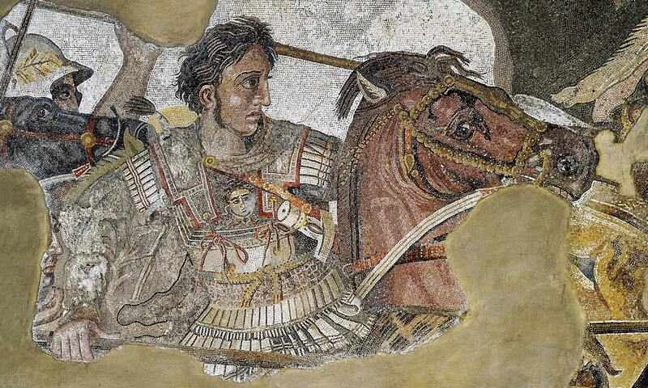
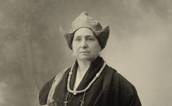
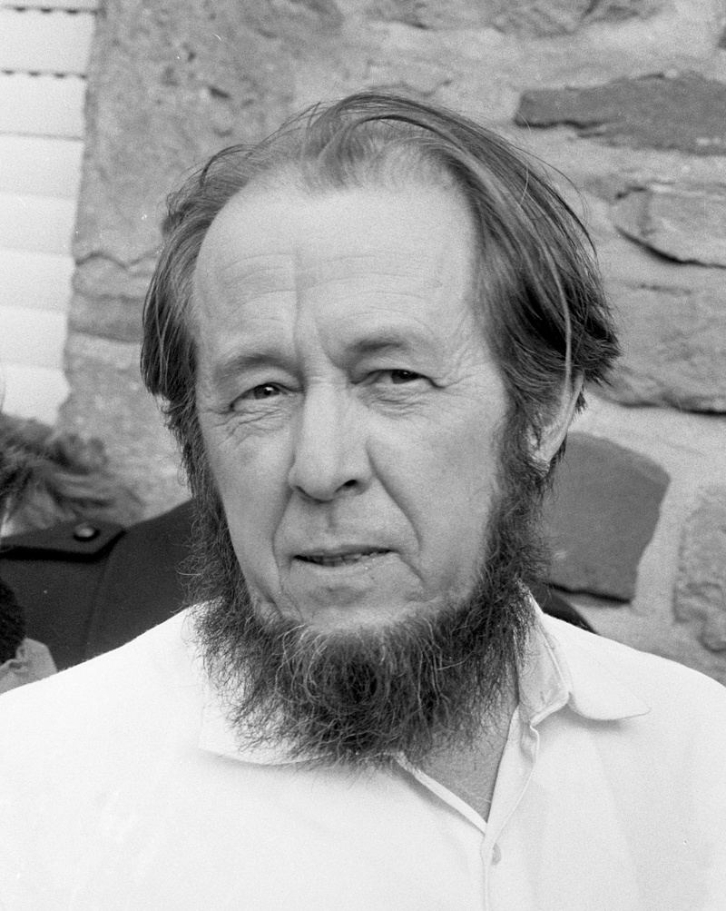

The name "Alexander" is our program. Not as hero worship, but as a methodological attitude: We look for patterns of resilience, reflection, and responsibility in historical lives – and ask what they mean for our present.
The figures gathered here – men and women with an "Alexander" connection – show different facets of what constitutes resilience: systemic thinking (Humboldt), error culture (Fleming), moral steadfastness (Solzhenitsyn), education as stabilizer (Hypatia), courage to explore (David-Néel), institutional reforms (Kollontai), and strategic adaptability (Alexander the Great).
We don't hide their dark sides. The lesson lies precisely in the ambivalences: Resilience without ethics becomes destructive. Power without reflection causes harm. Progress without justice is fragile. The following portraits are not hagiographies, but critical appreciations – with an eye on what we need today.
Navigation Tip
Each portrait follows the same structure: Biography & Context → Resilience Perspective → Critical Reflection → Practical Transfer. Use the table of contents to jump directly to a person.

Alexander the Great
Strategy & Adaptability
356–323 BC · Macedonian King and Military Commander
Biography & Historical Context
Alexander III of Macedon, student of Aristotle, took power at age 20 and conquered an empire from Greece to the Indus within ten years. His campaigns fundamentally changed the ancient world: they created a network of cultures (Hellenism), promoted trade and knowledge transfer, but also required enormous military violence and claimed hundreds of thousands of victims.
Alexander was not merely a conqueror. He founded cities, integrated Persian elites into his administration, married Bactrian princesses, and promoted cultural synthesis. His approach was pragmatic-strategic: where violence didn't help, he relied on diplomacy and symbolic integration. But his style of rule was also autocratic, his decisions sometimes impulsive, and the price of his vision was high.
Resilience Perspective: What We Can Learn
Deciding under uncertainty: Alexander constantly moved in unknown terrain – geographically, politically, culturally. His ability to decide quickly and adapt plans was a survival condition. Lesson: In complex situations, decision speed is often more important than perfect information.
Cultural translation work: Instead of just subjugating conquered territories, Alexander tried to combine Persian and Greek elements. This stabilized his empire in the short term. Today: Diverse teams and intercultural competence increase system resilience.
Logistics as foundation: His campaigns only worked because supply lines were secured. Transfer: Resilience needs functioning infrastructures – material and social.
Symbolic communication: Alexander staged himself consciously – as successor to the pharaohs, as protector of Greek culture. Narratives are instruments of power. Lesson: Those who want to promote resilience must tell stories that create meaning.
Critical Reflection: Ambivalences & Dark Sides
Alexander's conquests were violent. Cities like Tyre and Thebes were destroyed, populations enslaved. His leadership style became increasingly despotic – he had critics executed, including close confidants. His early death at 32 left an empire without stable succession, which quickly fragmented.
The central lesson: Leadership without ethical reflection and institutional safeguards leads to damage that lasts generations. Resilience cannot rest on a single person – it needs structures, checks and balances, shared responsibility. Alexander's success was brilliant, but not sustainable.
Practical Transfer to Today
In crisis situations – whether pandemic, climate change, or geopolitical conflicts – we need adaptive leadership: quick decisions, cultural sensitivity, clear communication. But equally important: democratic control, transparency, error culture. Alexander's story warns against elevating charismatic individuals. Resilient systems build on collective intelligence, not hero figures.
Hypatia of Alexandria
Education as Beacon
ca. 355–415 AD · Philosopher, Mathematician, Astronomer
Biography & Historical Context
Hypatia taught in Alexandria, the intellectual center of late antiquity. She commented on the works of Ptolemy and Diophantus, led a philosophy school, and advised high-ranking officials. In a time of religious upheaval – Christianity was increasingly displacing the old cults – she embodied rational discourse and scientific independence.
Her violent death in 415 AD, perpetrated by a Christian mob, is considered a symbol of the decline of ancient scholarship. Hypatia's murder shows: Knowledge spaces are fragile and must be actively protected. Her students passed on her memory – and the recollection of a time when education connected religions, ethnicities, and genders.
Resilience Perspective: What We Can Learn
Education as cultural immune system: Hypatia's school was a place of critical thinking. Such spaces create societal resilience because they enable people to see through propaganda, test arguments, tolerate uncertainty.
Maintaining dialogue spaces: In polarized times, places are needed where different perspectives come together. Hypatia's school was religiously and ethnically diverse – a model for pluralistic discourse culture.
Interdisciplinarity: She combined mathematics, astronomy, philosophy. Resilience often emerges at interfaces: those who know different ways of thinking are more adaptable.
Role model function: Hypatia was one of the few publicly visible scholars of her time – and a woman. Her existence alone expanded possibility spaces. Today: Representation creates self-efficacy.
Critical Reflection: Limits & Tragedy
Hypatia's story ends with her murder – a brutal failure of the ideal that reason defeats fanaticism. She shows: Education alone doesn't protect when social tensions escalate. Resilience needs not only individual enlightenment but also institutional safeguards: rule of law, minority protection, a public that condemns violence.
At the same time: Hypatia's legacy survived. Her fate became a warning – and her method of promoting critical thinking remains relevant. The tragedy is that she herself could not be protected. The lesson: We must actively defend knowledge spaces, not just intellectually but politically.
Practical Transfer to Today
Educational institutions, libraries, independent media are modern equivalents of Hypatia's school. Financing, protecting, and making them accessible is resilience investment. In times of disinformation and polarization, digital media literacy is also needed – the ability to check sources, evaluate arguments, deal with ambiguity. Hypatia's legacy: Critical thinking is not a luxury option but a survival strategy.

Alexandra David-Néel
Courage at the Edges
1868–1969 · French Traveler, Buddhist, Author
Biography & Historical Context
Alexandra David-Néel was an opera singer, anarchist, Buddhist, and explorer. In 1924, she became the first Western woman to reach Lhasa, the forbidden capital of Tibet – disguised as a beggar, after months of walking through the Himalayas. Her travels were not touristic but existential: she sought spiritual insight and tested her limits.
David-Néel lived for years in monasteries, learned Tibetan, studied Buddhist philosophy, and wrote over 30 books. She was not a neutral observer but an engaged participant – and at the same time a critical analyst. Her texts combined adventurousness with intellectual depth. She died at age 100, having lived a life between cultures, continents, and worldviews.
Resilience Perspective: What We Can Learn
Crossing boundaries as training: New environments demand adaptability. David-Néel developed enormous psychological resilience through her travels – cold, hunger, uncertainty became normal. Transfer: Controlled leaving of the comfort zone strengthens resilience.
Inner order in chaos: She practiced meditation daily, kept diaries, maintained rituals. This self-leadership was an anchor point in chaotic environments. Lesson: Routines create stability when external structures are lacking.
Cultural sensitivity: Instead of exoticizing Tibet, she learned language, customs, philosophy. Respect for the foreign was not only ethically required but strategically wise – it enabled access and protection.
Long-term perspective: Her travels required years of preparation and endurance. Resilience is often a marathon, not a sprint. David-Néel shows: Patience and determination overcome the seemingly impossible.
Critical Reflection: Privileges & Blind Spots
David-Néel's travels were only possible because as a white European she enjoyed certain privileges – access to resources, relative safety in diplomatic contexts. Her writings sometimes romanticize Tibet, ignore political realities (e.g., the feudal structure of monasteries). She was a product of her time – and her fascination with the "exotic" carries colonial traces.
The lesson: Courage alone is not enough. Resilience also needs self-reflection – the ability to recognize one's own blind spots, privileges, and projections. David-Néel's achievement remains impressive, but she is not an uncritical role model.
Practical Transfer to Today
In a globalized, mobile world, intercultural competence is not a luxury but a core skill. David-Néel's method – immerse, learn, respect – is a model for migration, development cooperation, international teams. At the same time, she shows: Exploration strengthens self-efficacy. Those who master new environments grow. This applies to travel but also to professional or social fresh starts. Resilience emerges through conscious challenges.
Alexandra Kollontai was the first woman in a government worldwide in 1917 – as People's Commissar for Social Welfare in Lenin's cabinet. She fought for reproductive rights, childcare, divorce rights, sexual self-determination – issues still contested in many countries today. Her vision: a society where care work is collectively organized and women are economically independent.
Kollontai wrote about "new love," criticized bourgeois marriage, demanded state support for mothers. She was radical – and caused friction: within the party she was considered inconvenient, her ideas rejected as too far-reaching. From 1923 she worked as a diplomat (including ambassador to Norway, Mexico, Sweden) and survived Stalin's purges – presumably because she was abroad and strategically silent.
Resilience Perspective: What We Can Learn
Structural justice increases resilience: Kollontai's reforms aimed to systemically reduce individual vulnerability. Childcare, healthcare, social security are not charity but resilience infrastructure.
Social networks as foundation: She understood: people are not resilient in isolation but through relationships and solidarity. Collective resilience emerges when communities care for each other – institutionally secured.
Persistence against resistance: Kollontai was marginalized, her ideas rejected – but she didn't give up. Resilience often shows in long-term endurance: reform work needs patience, tactics, alliances.
Gender justice as stabilizer: Societies that exclude women waste potential. Kollontai's approach: equality is not an identity issue but a stability question.
Kollontai was part of a system that oppressed millions. She criticized the party only to a certain point – then she adapted. Her diplomatic career enabled survival but also compromises. The question remains: How much adaptation is legitimate to retain influence?
Her ideas about "free love" were partly misunderstood or instrumentalized. Some of her writings seem naïve today regarding the power relations that shape sexual relationships. The lesson: System critique must also include one's own structures. Kollontai's legacy is valuable but not flawless. Resilience needs reflexive solidarity – not blind activism.
Practical Transfer to Today
Kollontai's core question remains relevant: How do we design societies where care work is recognized, fairly distributed, and secured? This affects childcare, nursing, psychosocial services – all areas under pressure. Her lesson: Resilience is not individual achievement but result of fair institutions. Those who share burdens collectively increase everyone's resilience. Practically: Expand social security systems, upgrade care work, structurally anchor gender justice.

Alexander Solzhenitsyn
Truth as Resistance
1918–2008 · Russian Writer, Dissident, Nobel Prize Winner
Biography & Historical Context
Solzhenitsyn was arrested in 1945 for critical remarks about Stalin and spent eight years in the Gulag. He survived forced labor, hunger, illness – and decided to bear witness. His work "The Gulag Archipelago" (1973) documented the Soviet camp system and became a moral indictment of totalitarian systems.
Solzhenitsyn was not a simple hero: after exile to the West, he also sharply criticized Western societies – consumerism, nihilism, moral relativism. He held conservative, partly nationalist positions that are controversial. His value lies not in his political views but in his commitment to truth – even when uncomfortable.
Resilience Perspective: What We Can Learn
Meaning-orientation as survival strategy: Viktor Frankl described how camp survivors were often those who found meaning – a task, a responsibility. Solzhenitsyn lived to write, to witness. Lesson: Meaning stabilizes under extreme conditions.
Culture of remembrance protects from repetition: His work is documentation – not revenge but memory work. Societies that name and process crimes are more resilient against authoritarianism.
Moral clarity under pressure: Solzhenitsyn refused to imitate his tormentors – he stayed with his principles. Resilience doesn't mean adaptation at any cost but preserving integrity, even when costly.
Witnessing as responsibility: He saw it as a duty to document what he experienced – not just for himself but for future generations. Lesson: Sharing experiences creates collective memory and cultural resilience.
Critical Reflection: Ambivalences & Blind Spots
Solzhenitsyn's criticism of the West was often sweeping and nostalgic. He idealized pre-revolutionary Russian traditions, ignored their repression. His later writings show: Trauma can lead to rigid worldviews. Those who experience injustice sometimes tend to think in categories of good/evil – without gray areas. The lesson: Witnessing is valuable but not infallible. Victims also need critical reflection.
Moreover: Solzhenitsyn benefited from his visibility as a white, male intellectual. Millions of Gulag victims remained silent. His work is important – but it is one voice among many, not the only truth.
Practical Transfer to Today
In times of disinformation and revisionism, culture of remembrance is resilience work. This concerns Holocaust memorials, processing colonial crimes, documenting war crimes. Solzhenitsyn's method – observe precisely, document in detail, make public – is a model for investigative journalism, human rights work, historical research.
At the same time: Truth must be communicated in a bearable way. Solzhenitsyn's books are harsh but readable. He found a form that makes horror communicable. Lesson for today: Trauma-sensitive communication – convey facts without retraumatizing, without trivializing. Resilience needs truth but also empathy in communication.
Alexander Fleming
Mistakes as Treasure Trove
1881–1955 · Scottish Bacteriologist, Discoverer of Penicillin
Biography & Historical Context
In 1928, Fleming returned from vacation and found a moldy petri dish in his laboratory. Instead of discarding it, he observed: the mold (Penicillium notatum) had killed bacteria. This accidental observation led to the discovery of penicillin – the first antibiotic that saved millions of lives.
Fleming was not a lone genius. Mass production of penicillin was only achieved through the work of Howard Florey and Ernst Boris Chain in the 1940s – an example of collective innovation. Fleming received the Nobel Prize in 1945 but warned early about antibiotic resistance – a warning more relevant today than ever.
Resilience Perspective: What We Can Learn
Making serendipity productive: Accidents happen – but only prepared minds recognize their significance. Fleming could have thrown away the dish. Instead, he asked: What's going on here? Lesson: Attention and curiosity are resilience factors.
Error-friendly research culture: Fleming's lab was chaotic – and that enabled the accident. Too sterile systems don't allow deviations. Resilience needs experimental spaces where failure is permitted.
Rapid translation: Between discovery (1928) and clinical application (1940s) were years. But the team around Florey/Chain worked under wartime pressure with high intensity on implementation. Lesson: Basic research and application must be connected.
Interdisciplinary collaboration: Penicillin only became mass-ready through chemists, physicians, engineers. Innovation is team sport. Resilience emerges through networked expertise.
Critical Reflection: Limits of Chance
Fleming's success is often told as "lucky accident" – this obscures the systematic work behind it. He researched bacteria for years, had infrastructure, resources, academic freedom. Not every accident leads to breakthroughs – only those that happen in stable systems with resources.
Moreover: The overuse of antibiotics – which Fleming foresaw – is now a global problem. His discovery saved lives but also created new risks. The lesson: Innovation without impact assessment is risky. Resilience needs not only problem solutions but also reflection on side effects.
Practical Transfer to Today
Error culture in organizations is often lip service. Fleming's story shows: Real error tolerance requires structural conditions – resources for exploration, time for "useless" research, psychological safety. In companies, administrations, schools: Allow experimentation, see deviations as learning sources.
At the same time: Rapid translation of knowledge into practice is resilience competence. Covid vaccine development showed that acceleration is possible – when resources, cooperation, and political will come together. Fleming's legacy: Curiosity + teamwork + implementation strength = resilient systems.
Humboldt traveled Latin America between 1799 and 1804 – 60,000 kilometers on foot, on horseback, by canoe. He measured temperatures, air pressure, magnetic fields, collected plants, mapped rivers. His work "Cosmos" (1845–1862) attempted to present all of nature as a networked system – a vision that shaped modern ecology, climate research, and systems theory.
Humboldt was a scientist but also a political thinker. He criticized slavery, colonialism, exploitation of nature. He understood early: local interventions have global consequences. His approach was holistic – he connected natural science with aesthetics, culture, ethics. Today he is considered a pioneer of the Anthropocene – the recognition that humans shape the Earth.
Resilience Perspective: What We Can Learn
Systems thinking as foundation: Humboldt saw connections – between climate and vegetation, between altitude and biodiversity. Resilience emerges when we understand interactions instead of thinking in isolation. Lesson: Acknowledge complexity, don't reduce it away.
Long-term perspective: He warned of deforestation, soil erosion, climate change – topics only broadly discussed decades later. Resilience needs foresight: not just managing crises but practicing prevention.
Interdisciplinarity increases adaptability: Humboldt connected geology, botany, ethnography, astronomy. Those who know different disciplines see more solution paths. Today: Overcome silo thinking, use interfaces.
Data-based analysis: Humboldt measured everything – meticulously, systematically. His data were the basis for theories. Resilience needs evidence: not gut feeling but facts as decision basis.
Critical Reflection: Colonial Entanglements
Humboldt's travels took place in the context of European expansion. Even though he criticized colonialism – he benefited from colonial structures: access to territories, support from colonial authorities, economic privileges. His collections also contained objects whose origins are critically viewed today.
Moreover: Humboldt's depictions of indigenous peoples are paternalistic. He admired their knowledge but often saw them as "noble savages" – a romanticizing projection. The lesson: Even progressive thinkers are children of their time. Resilience work must reflect on its own blind spots – historically and currently.
Practical Transfer to Today
Humboldt's method – observe precisely, network, think long-term – is a model for climate research, urban planning, supply chain analysis. Systems are complex; those who want to understand them need interdisciplinary teams, data, patience.
His warning about environmental destruction is more urgent today than ever. Resilience in the Anthropocene means: Acknowledge planetary boundaries, establish circular economy, stop nature destruction. Humboldt's legacy: Everything is connected – those who understand this can build resilient systems. Those who ignore it risk collapse.
Conclusion: Alexander as Method
These seven figures show: Resilience has many faces. It emerges through education (Hypatia), courage (David-Néel), solidarity (Kollontai), truth (Solzhenitsyn), error culture (Fleming), systems thinking (Humboldt), and strategic adaptation (Alexander the Great). None of these figures is perfect – all have dark sides, blind spots, contradictions.
That's the point: Resilience is not heroism but method. It's not about worshiping role models but learning from their patterns. What did they do right? Where did they fail? What conditions enabled their achievements – and which prevented others from achieving the same?
The Central Lesson
Resilience is learnable, shapeable, and collective. It needs fair institutions, error culture, education, solidarity – and people willing to take responsibility, name truth, see connections.
The Alexander Forum bears this name not out of nostalgia but as commitment: We look for patterns of resilience – in history, in the present, across disciplines. We ask: What stabilizes people and societies? What makes them vulnerable? And how can we collectively shape more resilient futures?
The Alexandrian namesakes are signposts – not destinations. They show directions, not answers. In this spirit we work: critically, reflectively, in solidarity – and always ready to learn from people who asked similar questions before us.